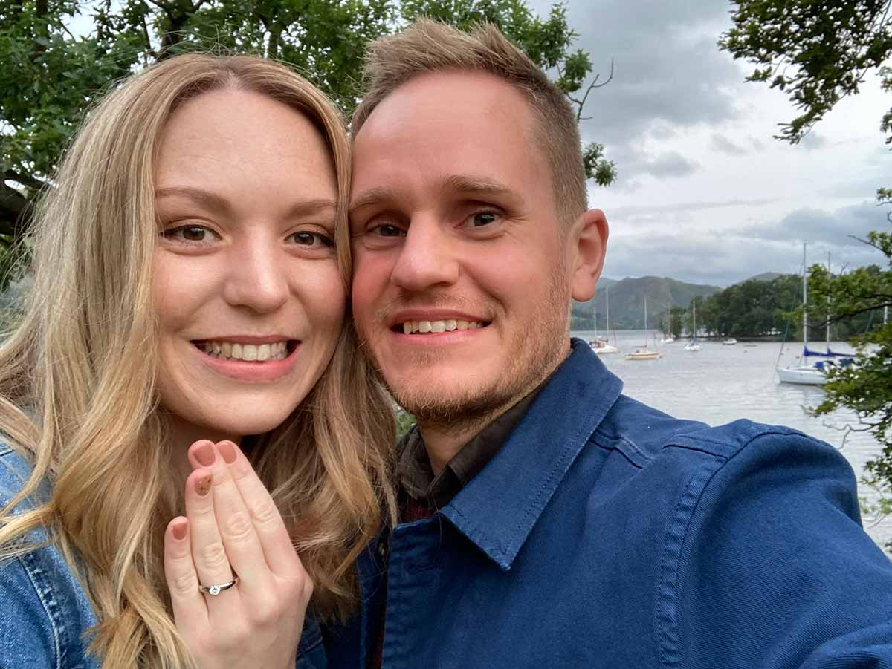

Join us on our special day
The Coach House
at The George, Alstonefield
Please let us know whether you’ll be attending by 1 June 2021 rsvp@harrietandjames.wedding
4 September 2021
Join us on our special day
The Coach House
at The George, Alstonefield
Please let us know whether you’ll be attending by 1 June 2021 rsvp@harrietandjames.wedding
Since getting engaged in September 2020 in the Lake District there’s been a lot of crazy planning going on. Some highs, lots of lows (thanks COVID!) and a date change later we can finally get excited about getting married!
The day will be relaxed and not-so-formal, with good food being a big part of it – but most of all we’re looking forward to having all the important people in our lives together to make it a day to remember.
Here’s the order of the day:
Day guests |
|
|---|---|
| 12.30 | Small ceremony with close family |
| 2.30 | Feast and drinks |
| 3.30 | Speeches and dessert |
Evening guests |
|
| From 5 | We welcome all our wonderful friends and family to celebrate with us |
| Early evening | Cocktails and good grub |
| Later | Drinks and dancing with live music |
We’re getting married at The Coach House in Alstonefield. The Coach House is a venue run by the team at The George restaurant. Take a closer look at the venue.
The Coach House is situated behind the The George restaurant. You’ll find the entrance to the The Coach House courtyard a few buildings to the right of the restaurant.
The George Alstonefield Nr Ashbourne Derbyshire DE6 2FX
Not only have the team won awards for their food, the venue is exactly what we were looking for. It’s intimate, set in a beautiful location and something a little bit different.
Here’s what they say about themselves:
The George is an unspoilt, award winning pub turned restaurant in the Peak District village of Alstonefield, above Dovedale and a stones throw from Mill Dale within the Peak National Park.
Join us to enjoy our carefully selected wine list and exceptional food; a standard recognised in The Good Food Guide since 2009; Michelin and Sawdays – to name but a few.
The venue is in the Peak District, so travelling by car is likely the best way to get here.
For day guests: parking in the village is limited. The closest car park is over the road. Alternatively, there is the Playing Fields car park just down the lane. Please note: the car parks are free, but overnight parking is not permitted. Read more about parking on the Alstonefield community website.
For evening guests: parking in the village is limited so you are best to arrange a taxi from your accommodation.
Local taxi options:
There are many B&Bs in the vicinity surrounded by beautiful countryside.
The nearest town is Ashbourne 15 minutes drive away. There you’ll find options from a Victorian country house to the Travelodge.
Alstonefield's community website has a list of accommodation that you might find helpful.
Unfortunately, since we originally expected a very small wedding based on the restrictions at the time, the venue capacity means we’re unable to extend invitations to children. So time to let your hair down and have a night off!
We’re in the process of designing our menu. We plan on predominantly vegetable-based dishes. To get an idea of the sort of food to expect, read The George’s ‘hopes and good intentions’.
Please let us know about any food and drink requirements. Email rsvp@harrietandjames.wedding.
If you would like to buy us a wedding gift, please check back here as we’ll be adding our gift list soon.